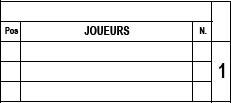

Lineup (Ordre au bâton) .
 Ecrire dans la case du haut qui s’étend de la case Pos à N° le nom de l’équipe des joueurs qui seront listés en dessous
| Pos |
La position défensive du joueur indiqué par un chiffre de 1 à 9. Un joueur qui a le rôle de ‘ Designated Hitter ’ est noté avec un ‘DH’, celui d’un ‘ Pitch Hitter ’ par un ‘PH’ et celui d’un ‘Pitch Runner’ par un ‘PR’.
Dans le cas d’un PH ou PR, penser à réserver de la place pour indiquer ensuite la position défensive qu’ils vont prendre.
|
| Joueurs |
Nom de famille en majuscule, et le prénom en minuscule. Quand on dispose d’un roster officiel, on doit utiliser les noms définis dans ce roster. La première ligne est destinée au joueur qui commence le match, les deux lignes suivantes sont pour indiquer les remplaçants. Si l’on a besoin de plus de lignes pour noter les remplacements, on doit utiliser les lignes qui sont situés en dessous de la case 9. On devra alors noter l’ordre au bâton dans la case à droite du numéro de maillot.
|
| N° |
Numéro de maillot du joueur.
|
Le numéro imprimé sur la feuille correspond numéro d’ordre au bâton. Quand une équipe utilise un ‘ Designated Hitter ’, il est inscrit dans le lineup. Comme un ‘DH’ passe au bâton pour un lanceur, le nom du lanceur doit être écrit dans la colonne réservée aux lanceurs sous le ‘lineup’.